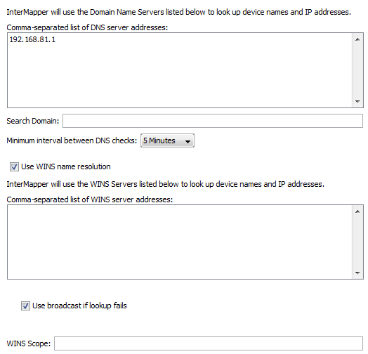

DNS/WINS Settings
Use the DNS/WINS Settings section to specify the DNS server(s) and WINS
server(s) that InterMapper uses. InterMapper uses your current DNS servers
as its default.
InterMapper can use one or more Domain Name Service servers (DNS) to convert
DNS names to addresses and back. InterMapper checks the listed DNS server(s)
at regular intervals to make sure that the DNS name and IP address for a device
match.
When you start InterMapper on a MacOS X or Windows machine, the DNS servers
specified by the current network configuration are used. On Unix machines, you
must enter one or more DNS server addresses manually.
The DNS addresses are optional: if the preference is empty, InterMapper does
not attempt to make DNS <-> IP address conversions.
For example, when InterMapper polls a device that has a name assigned, it looks
up the corresponding IP address in the DNS. If the resulting address has changed
since the device was added to a map, InterMapper logs an error message.

DNS/WINS Settings pane.
Setting DNS Monitor Preferences
Set DNS Monitor preferences as follows:
- Comma-separated list of Domain Name Server addresses - Enter a
list of Domain Name Server addresses, separated by commas.
- Search Domain
- Enter a name to append to a partial domain name
to make a fully-qualified domain name.
- Minimum interval between DNS checks - Set this value to
the amount of time to wait between successive queries for a host. Use a
larger value to reduce the number of times the DNS is checked.
Setting WINS Preferences
You can specify one or more WINS servers that InterMapper will use for WINS
lookups. InterMapper can also fall back to broadcast lookups for WINS/NetBIOS
name lookups. Unless instructed by your network administrator, you should
usually leave the WINS Scope blank.
- Use WINS name resolution - Check this box to allow InterMapper
to use the specified WINS servers to look up device names and addresses.
- Comma-separated list of WINS server addresses - Enter a list of
addresses, separated by commas.
- Use broadcast if lookup fails - Check this box to allow InterMapper
to use broadcast lookups for WINS/NetBIOS lookups if the WINS lookup fails.
- WINS Scope - Enter a WINS Scope. This should only be necessary
if instructed by your network administrator.